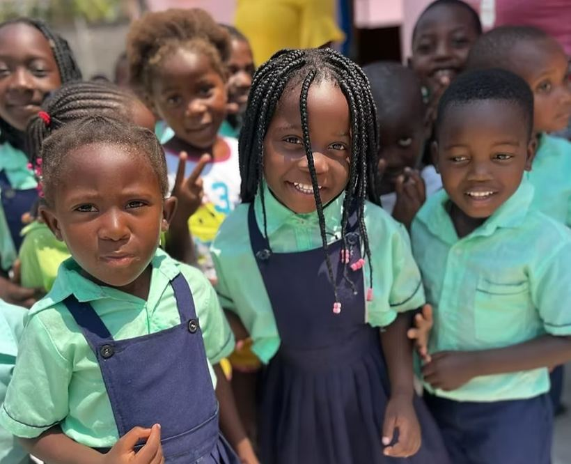

Bonguile Preschool
- Duration
- A morning
- Price
- No charge
- Operator
- Arranged by reception
- Website
- bahiamarclub.com/bonguili
Details
Bahia Mar proudly partners with ParCo, a local NGO focused on community development. With generous support from our guests, we fund the Bonguile Preschool, providing over 60 children each year with quality early education, nutritious meals, and essential learning resources. In a region where many children stay home until age six, this program gives them a vital head start — building skills in Portuguese, socialization, early math, and literacy. Thanks to ongoing guest contributions, our teachers receive consistent pay, and the school remains a safe, welcoming place, even when local families face financial hardship. Visitors often enjoy stopping by the preschool to connect with the children through games and shared joy.
Good to know: Want to visit the school? Just ask at reception — it's free and unforgettable.